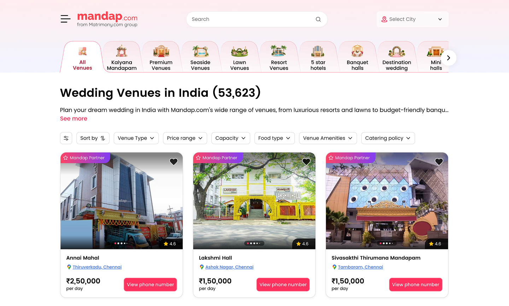
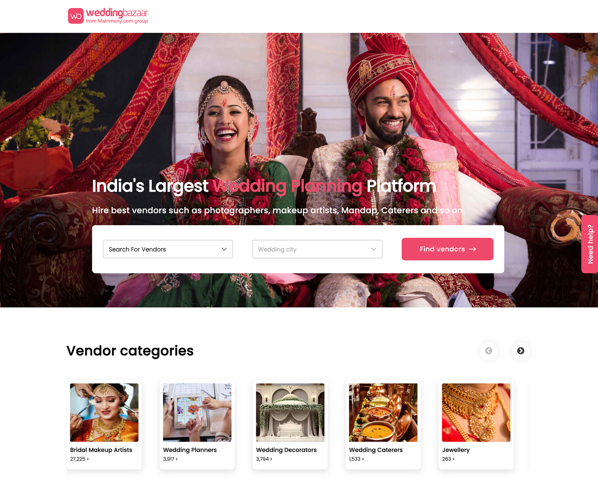
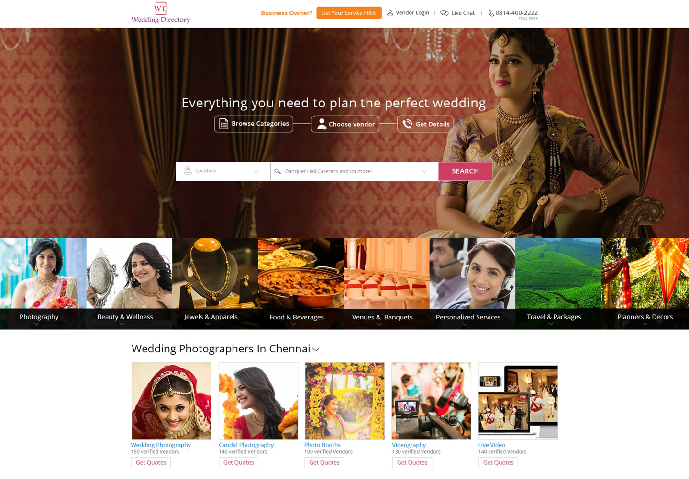
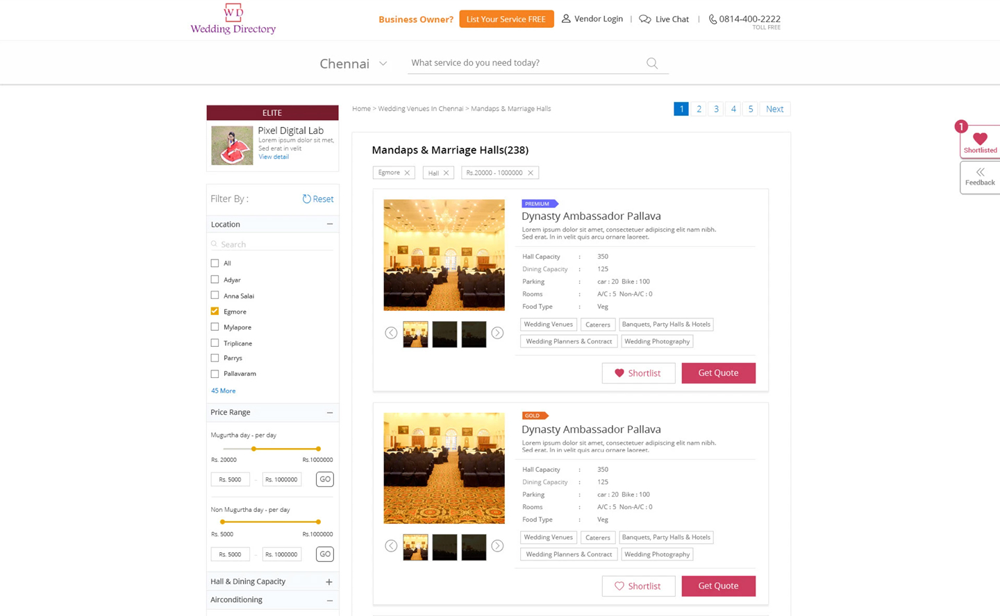
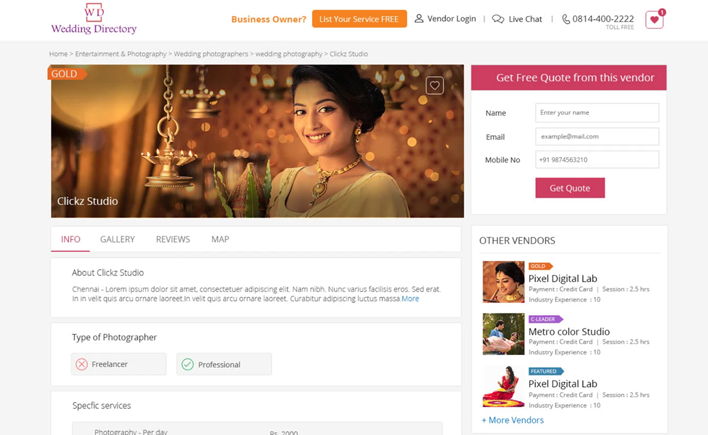

Matrimony.com · Web Designer
Product interfaces and wedding discovery at Matrimony.com
I contributed to recurring Bharat Matrimony product improvements, marketing creatives, and wedding-discovery projects across web and mobile. My work ranged from sprint-based interface updates to wireframes and high-fidelity concepts.
01 · Bharat Matrimony
Sprint-based product improvements
I worked with product teams on recurring updates across Bharat Matrimony’s web and mobile experiences. Alongside product interfaces, I designed social-media and notification banners for festivals and auspicious occasions.
This was iterative contribution within an established platform, not a claim that I redesigned the entire Bharat Matrimony product.
Improving parts of a living product
I reviewed requirements with the team, designed interface changes, and refined the work through the sprint process.
- Profile interfaces.
- Premium-member interfaces.
- CTA placement and interface refinements.
- Social-media and notification banners for festivals and auspicious occasions.

02 · Mandap
Historical design contributionHelping people discover wedding venues
Mandap helps people discover wedding venues. My contribution included reviewing requirements, creating wireframes, and designing high-fidelity interfaces.
The current website has evolved since my work and is shown only as present-day product context.
03 · WeddingBazaar
Historical design contributionWedding-vendor and service discovery
WeddingBazaar helps people discover wedding vendors and services. I reviewed requirements, created wireframes, and designed high-fidelity interfaces for the experience.
The current website has changed since my employment and is shown only as present-day product context.

04 · Wedding Directory
A complete discovery concept from home to detail
I reviewed requirements, created wireframes, and designed the high-fidelity interface for Wedding Directory—a one-stop concept for discovering Indian wedding services.
The three original designs below are preserved from my Behance projects and shown in the intended sequence.
Home → Listings → Detail
Select any design to open the original-resolution image. The interfaces are shown proportionally and retain their original product colors.



05 · Divorce Matrimony
A time-limited access idea—not a verification claim
The team was exploring trust concerns around self-declared marital status. Under the project constraints communicated to me, requesting divorce certificates was not part of the proposed flow.
During brainstorming, I suggested a time-limited access concept inspired by software trial periods. The precise access rules and expiry behavior are not yet documented, and I left the company before seeing the subsequent results. This note does not claim that a trial verifies marital status or prevents fraud.